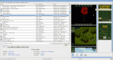
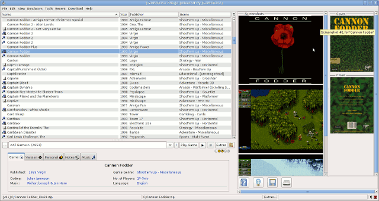
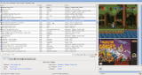
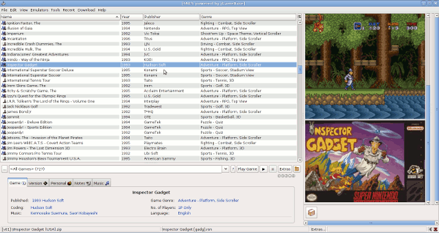
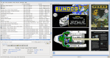
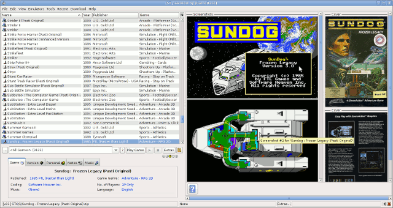

About
jGameBase is a fully-featured retro-jGameBase supports virtually any emulator for any system 
Screenshot of Commodore Amiga GameBaseand has versatile database searching and filtering capabilities.
There are databases for Apple II, Atari ST, Coleco ColecoVision, Commodore Amiga, Commodore C64, 
Screenshot of SNES GameBaseCommodore VIC20, Nintendo NES, Nintendo SNES, and Sinclair ZXSpectrum.
jGameBase makes playing the games and songs you remember from the good old times very easy, there is no need to
remember lots of 
Screenshot of Atari ST GameBasecommand line parameters or to fiddle with configuration settings.
Programmed in Java™ you can use jGameBase
on nearly every computer.
And best of all - it is Open Source.
 Released under the
GPL you are free to use and
distribute it.
Released under the
GPL you are free to use and
distribute it.
So - Christmas??? what are you waiting for?
Download jGameBase and enjoy the memories of the good old times!
Java™ is a registered trademark of Oracle Corporation
Linux™ is a registered trademark of Linus Torvalds and others
Macintosh™ is a registered trademark of Apple Inc.
Windows™ is a registered trademark of Microsoft Corporation
| Home | Mail Webmaster | ||
| Page last updated: 03. January 2017. |